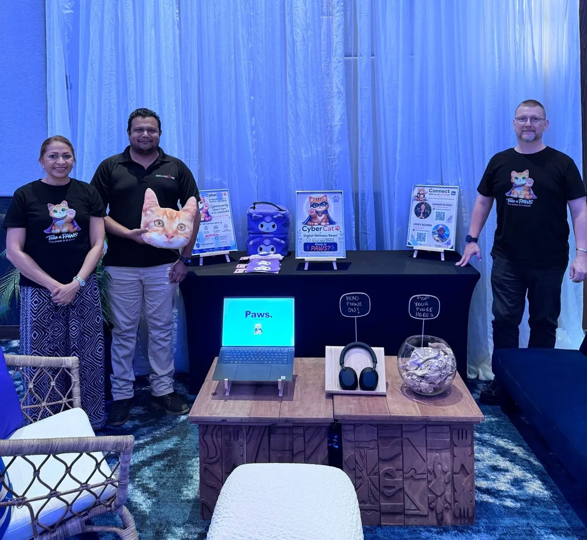
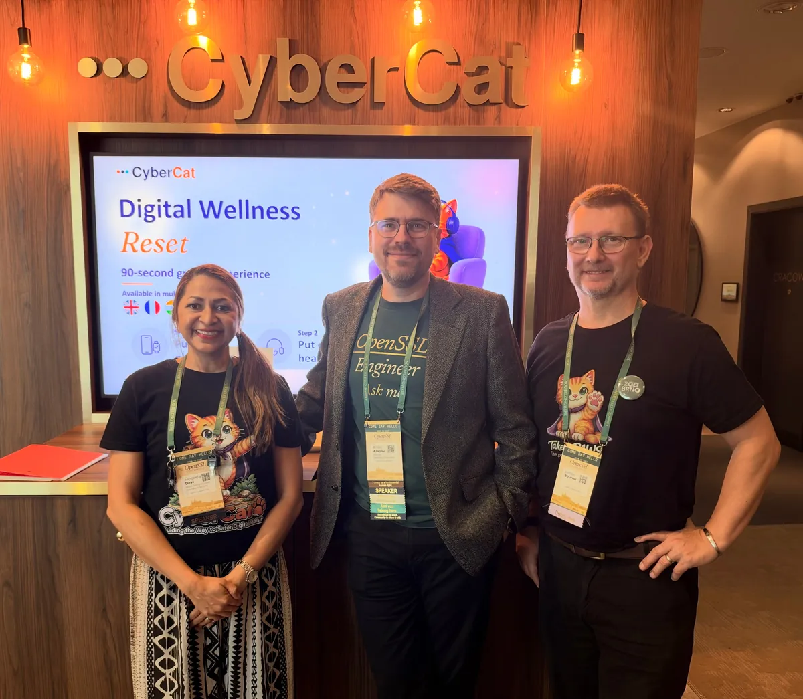
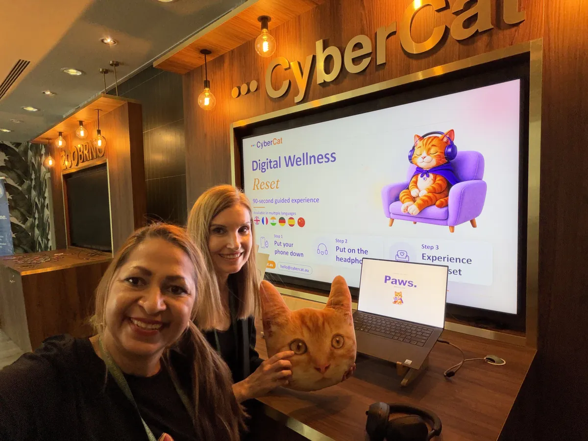

By lunchtime on day one, most delegates have spoken to 200 people, sat through several sessions and checked their phone more times than they can count. They are tired, distracted and still have most of the event to go.
That is why activations, quiet rooms and wellness lounges have become part of almost every major conference and expo. Most of them give people another screen, another giveaway or another pitch. Ours asks them to put the screen down.
What is a wellness activation?
A wellness activation is an experience at an event that looks after attendees rather than selling to them. The aim is simple: give people a short break so they get more out of the rest of the event.
The CyberCat Wellness Corner is a digital detox activation. Think of it as a digital detox bar for your conference or expo.

How the 90-second Digital Wellness Reset works
- A delegate sits down in a calm corner of the venue.
- They put their phone away and put on headphones.
- They follow a short guided experience with music and simple messages.
- Ninety seconds later, they head back to the event calmer and clearer, with one habit for the rest of the day: pause before you react.
There is no virtual reality headset, no app to download and no technical knowledge needed. Ninety seconds fits easily between sessions, meetings and stand visits.
Where we have run it
In 2026, delegates took the Reset at the CIDESCO World Congress in Nadi, Fiji and the OpenSSL Conference in Prague. One audience was beauty, spa and wellness professionals. The other was developers and security specialists. The response was the same.
- “Slow down and take the time to check things before you proceed.” Leanne, Totoka Hair and Makeup
- “The pause concept is like putting a firewall in our mind.” Heather, Viti Oil
- “A very clever way of conveying how to be cyber safe out there.” Carla, OpenSSL Conference

Wellness Corner or Conference Activation?
- Wellness Corner: a calm place for delegates to sit, switch off and take the Reset between sessions.
- Conference Activation: a bigger, branded CyberCat space where delegates take the Reset and talk with our team about digital habits and online safety.
- Workplace events: a short reset for staff at team days, offsites and in-house conferences.
The supporting messages can be adapted to your audience and theme, including practical digital safety. We discuss your event’s requirements before booking.

More than a booth
A Wellness Corner is not a stand that hands out brochures. It is a place delegates choose to visit and remember afterwards. Every visit tends to start a conversation about digital habits, scams and safer decisions.
You can also pair it with a conference session or workshop on digital skills, cybersecurity awareness and safer online habits.
Questions organisers ask
What is a wellness activation at an event?
An experience that gives attendees a practical break during a conference or expo. The CyberCat Wellness Corner is a digital detox activation: a guided 90-second reset with headphones that helps delegates switch off and refocus.
How long does the Digital Wellness Reset take?
About 90 seconds per person. Delegates only need headphones, which we bring.
Can it be adapted to our event?
Yes. The supporting messages can be adapted to your audience and theme. Tell us about your event and we will discuss what suits it.
Do you travel to events overseas?
Yes. We have delivered in Australia, Fiji and Europe, and we travel to conferences and events internationally.
Add a Wellness Corner to your next event
Tell us about your event, audience, dates and location.